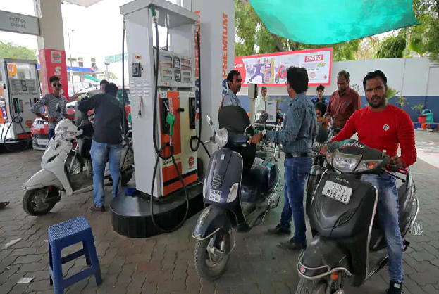

CURRENT-AFFAIRS JAN 20 2022
India
1. Alliance between BJP and PLC for Punjab Vidhan Sabha Elections
For the Punjab Assembly elections, the BJP has decided to forge an alliance with the party of former CM Captain Amarinder Singh. There has also been an almost agreement between the two parties regarding the sharing of seats.
2. When will you get relief from the bitter cold? Meteorological Department made this prediction
New Delhi: It is freezing cold in North India. In such a situation, the Indian Meteorological Department (IMD) said on Wednesday that it will be cloudy in the coming days and the outbreak of cold will continue. According to the IMD, there is a possibility of rain in Punjab, Haryana, Delhi, West Uttar Pradesh and North Rajasthan from January 21 to January 23. According to the Meteorological Department, the minimum temperature in the capital Delhi is expected to be 10 degree Celsius on Thursday. The maximum temperature can be 17 degree Celsius. There will be fog in the morning and night.
Increase in both pollution and cold in Delhi
The Central Pollution Control Board (CPCB) said that the AQI in the national capital Delhi was recorded in the very poor category (330). Let us inform that on Wednesday morning the AQI of Ghaziabad was 332, Noida 324, Greater Noida 322, Faridabad 354, Gurugram 326. There is a possibility of getting relief from the dry cold of dry winds from today. Due to the active western disturbance, there is a possibility of light rain in Delhi-NCR for the next 3 days. Due to this, the minimum temperature will increase and there will be relief from icy winds, on the other hand, for the seventh consecutive day, a cold day has been recorded in different areas of Delhi.
3. UP: BJP can give so many seats to Apna Dal (S), plan revealed
Lucknow: Apna Dal (S) can get 13-14 seats in the UP Legislative Assembly elections (UP Election 2022). Apna Dal (S) can get 13-14 seats including Mauranipur, Rohaniya, Nanpara, Shohratgarh, Pratapgarh Sadar, Jehanabad. Let us tell you that there is an alliance of Apna Dal (S) and BJP in UP.
This plan came out
According to sources, BJP has made up its mind on all these seats that these seats will go to the account of its ally Apna Dal (S). It is worth noting that the alliance of BJP with this faction of Apna Dal has been going on since the 2014 elections.
BJP will make Aparna MLC
Meanwhile, after the formation of the government, what is the plan of BJP regarding Aparna Yadav, it has come to the fore. According to information received from sources, if the BJP government is formed in Uttar Pradesh, then the party can make Aparna Yadav a member of the Legislative Council.
4. Coronavirus: After 8 months, new cases in the country cross 3 lakh; 2.23 lakh people recovered in 24 hours
New Delhi: The infection of Coronavirus in India is increasing rapidly and in the last 24 hours more than 3 lakh cases have been registered in the country. The country has the highest number of cases in a day during the third wave of Kovid-19.
3.17 lakh new cases recovered in 24 hours
According to the data released by the Union Health Ministry on Thursday morning, 3 lakh 17 thousand 532 new cases of coronavirus have been reported across the country in the last 24 hours, while 491 people died due to the pandemic. Death took place.
5. Arunachal's youth kidnapped by China, MP appeals to the government
New Delhi: The Chinese Army has kidnapped a boy from Arunachal Pradesh from Indian territory, where China had constructed a 3-4 kilometer road in 2018. Kishore's friends managed to escape. He reported the incident to the authorities and the matter was brought to the notice of Tapir Gao, an MP from Arunachal Pradesh. After taking cognizance of the matter, the Indian Army has contacted the Chinese Army and asked to return the Indian youth.
6. Do healthy children need a booster dose of corona? WHO's Chief Scientist gave this advice
New Delhi: The havoc of the third wave of Coronavirus epidemic continues in India and more than 2 lakh new cases are being reported daily. Meanwhile, recently the vaccine was started for children aged 15 to 18 years and also precaution doses are being given to people above 60 years of age suffering from serious illness. After this questions were being raised whether even completely healthy children need a booster dose.
The answer of the Chief Scientist of WHO came to the fore
On the question of giving booster doses to healthy children, the answer of Soumya Swaminathan, Chief Scientist of the World Health Organization (WHO) has come to the fore. He said that there is no evidence yet that healthy children and adolescents need a coronavirus booster dose. This talk of Soumya Swaminathan has come at a time when other countries including America, Germany and Israel have started giving booster doses to children.
World
1. Corona: 40 crore masks will be distributed here for free, campaign will start from next week
Washington: In view of the increasing threat of Coronavirus, the US government will distribute 400 million high quality N95 masks for free. The Joe Biden administration said on Wednesday that it has been decided to provide free masks to people to control the corona infection and it will start implementation from next week.
Many distribution points will be made
According to the news published in our partner website WION, thousands of distribution points will be set up across the country to distribute N95 masks, this will also include pharmacies and community centers. It has been told by the White House that the campaign will be started from next week. An official said that this would be the largest distribution of personal protective equipment in American history.
2. जूम मीटिंग के दौरान 900 कर्मचारियों को निकाला था, अब दोबारा से इस CEO ने संभाला पदभार
New York: Indian-origin CEO Vishal Garg, who faced criticism for suddenly ordering 900 employees to be fired during a Zoom meeting before Christmas last month, took charge again on Wednesday. Garg is the CEO of online loan provider company 'Better.com'.
went on a long holiday
He had gone on a long leave after facing criticism for the way Garg had used words to fire employees during the Zoom meeting. However, Garg has already apologized for the manner in which he ordered the removal of around nine per cent of the company's employees.
apologized to the employees
Regarding this, Vishal Garg, CEO of Better.com, wrote a letter to the employees. In this, Garg had said that I have failed to show respect and appreciation to the fired people for their contribution to the company. I made a mistake in this decision.
3. The search is on for such a serial killer who brutally kills beautiful birds
London: A lake in Britain (UK) has been termed by people as a lake of horror. In fact, famous wildlife activist and rescuer Carly Ahlen has filed her complaint expressing displeasure after the murder of four beautiful and voiceless. Allen says that a 'serial killer' is mercilessly killing those animals, leaving evidence of his cruelty all over the area.
four swan hunt
Allen believes that the killing of beautiful birds especially ducks, swans and foxes in this lake is not the handiwork of any other animal but of a human. So far, they have found four animals in a mutilated condition near this lake in South-East London. Here Swan was beheaded and left in the same condition. Allen has also gathered some evidence after examining the entire lake. He went around like a forensic expert and made the pictures of carcasses of wild animals viral all over the country.
4. 21-year-old model murdered in guest house, 14 stab wounds were seen on the body
New Delhi: Sensation spread due to the murder of a model in Argentina, South America. This is the incident in Rosario city of Argentina where the body of 21-year-old OnlyFans model Melanie Juarez was found in a guesthouse. The model had 14 stab wounds on her body.
The room was opened with another key
According to the news of Daily Star, this incident is of January 17. When it came to know about this murder, when one of his friends called, he was not getting any answer. Then that friend called her sister and called her to the guesthouse. There the room was opened with another key.
Screaming as soon as the door was opened
When he opened the door and entered inside, his scream came out. Her sister's body was lying on the ground and her head rested on the mattress of the bed. There were horrifying wounds on his body.
TV was running on full volume
Forensic experts were shocked while noting some things. The door was locked from inside, no window was open. All the lights in the room were off and the TV was running on full volume.
5. The person did such a thing with the driver, anger broke out; took this step again
New Delhi: Every day something goes viral on social media. These days a letter is viral on social media. In which a takeaway delivery driver left an angry letter on the window of the car. The reason behind the angry letter is quite funny.
Share incident on social media
According to a news published in Mirror, the person mentioned about this incident on the social media site Reddit. The person wrote that when he saw his car, he was surprised. They found the letter inside a packet near the window of the car.
Man's anger erupted for not getting enough tips
The person told that a day ago he had taken the help of a takeaway delivery driver. After this the person gave some tip to the car delivery driver. But the driver was not satisfied with such a tip. This made the driver very upset. The person told that maybe that's why the driver wrote a letter in anger and put it in the car. Not only this, the driver also returned the money for the tip given with the person along with the letter.
Business
1. 7th Pay Commission: Employees' Bat-Batt! Salary will increase from this month, 3% increase in DA-DR
New Delhi: 7th Pay Commission update: Employees have got the gift in the first month of the new year. The government has given good news to lakhs of government employees and pensioners. Haryana Chief Minister Manohar Lal has again increased the dearness allowance of employees and dearness relief to pensioners. Apart from this, the contribution of New Pension Scheme has also been increased by 4 percent. Government employees are very happy with these gifts received in the first month of the new year.
increase in contribution
The Haryana government has also increased the employer contribution for its employees by 4 percent under the New Pension Scheme from January 1, 2022, while announcing the elders, due to which the total contribution has increased from 10 percent to 14 percent now. Now employees will get 25 crore monthly and 300 crore annual benefit, which has been implemented from 1 January 2022.
2. Saa₹thi: Good news for stock market investors! SEBI launched mobile app, know its benefits
New Delhi: There is good news for new investors planning to invest in the stock market. Now investing in the stock market will be even easier. The Securities and Exchange Board of India (SEBI) has taken tremendous steps for the convenience of investors. Board Chairman Ajay Tyagi on Wednesday launched Saarthi (Saa₹thi), a mobile app to educate investors. In this, investors will get many types of information.
SEBI launched new app
According to the information given by SEBI, from this app, investors will continue to get updates on securities market, KYC (Know Your Customer) process, trading and settlement, mutual funds, market. This will keep them aware of the ups and downs of the market. Along with this, information about things like Investor Grievances Redressal Mechanism will also be available.
This app will be very special for youth
Launching this app, Tyagi said, “This mobile app is an initiative of SEBI with a view to empower investors with knowledge about the securities market. Since a lot of investors have entered the market recently, most of the trading is mobile phone based, this app will help in making important and useful information accessible to the masses easily. I am sure that in the coming time this app will be popular among the investors especially the youth.
3. ITR Filing: There has been a big change in the rules for filling ITR! Know how income tax will be filed now, here's the way
New Delhi: Online Filing ITR: There is news of work for those filing income tax returns. There is important information for those who have not filed Income Tax Return till now. Taxpayers who could not file Income Tax Return (ITR Filing) due to the problems being faced in the Income Tax Portal, they can fill it till 31 March 2022 with a fine of Rs 5000.
The Central Board of Direct Taxes (CBDT) said, "Physical filing of tax audit reports and income tax returns are no longer practical." Some technical problems have been seen on the Income Tax Portal from the Gujarat High Court. Therefore, the Central Government had asked to consider allowing physical filing of returns. The Gujarat Income Tax Bar Association had filed a petition in the High Court demanding the submission of a physical copy of the tax audit report and ITR.
Know what the court said
A bench of Justice JB Pardiwala and Justice Nisha M Thakor of the Gujarat High Court heard the matter and said, 'In view of the problems being faced on the Income Tax Portal, the government should allow physical filing. The CBDT of the government should also adopt some practical method for filing ITR.
4. Another bad news on the crude oil front, the price of petrol and diesel is set to increase!
New Delhi: Amidst the rise in the price of crude oil at the international level, its production in the country has reduced. If we look at the data, there was a decline in the production of crude oil in India in December 2021 as well. The country's crude oil production has declined by about two percent due to reduced production of state-owned ONGC.
Why the fear of increasing the price?
Due to less domestic supply than demand, India has to meet 85 percent of its crude oil requirement through imports. The current situation is that the prices of crude oil have increased globally. On the other hand, domestic production is decreasing. In such a situation, it is expected that the price of petrol and diesel will increase in the coming days.
5. LPG Booking: Here you will get 50 rupees cheaper gas cylinder, know how to book?
New Delhi: In the midst of the Corona epidemic, inflation has broken its back. Meanwhile, the prices of LPG cylinders are skyrocketing. But if you want to get cheap gas cylinder, then an offer has come for you. This offer is being given by Pockets App, which facilitates digital payment. You get cashback offer on booking gas cylinder from this app.
How much do you get cashback
If you also book gas through Pockets App, then you get 10 percent cashback (maximum Rs 50). This app is operated by ICICI Bank.